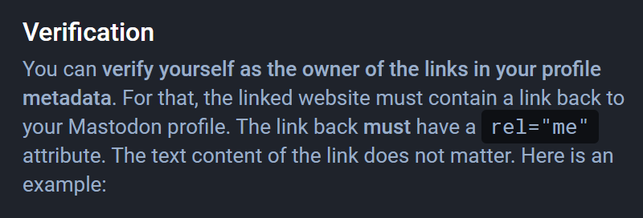
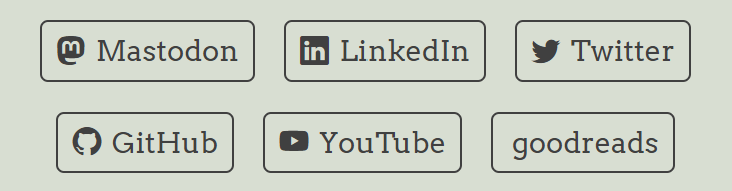

I first signed up for a Mastodon social account a few weeks ago to more closely follow the data science community. So far, I am really enjoying the highly curated (ad free) feeds that focus on the topics I care to learn about. I noticed there was a feature within Mastodon that could verify links such as your website, so others could see that the same person is controlling both an individual Mastodon account and a particular linked blog website. It results in a fancy green check mark next to a website you list in your profile, and it doesn’t cost any money to do so.
Verification
At the time of this writing, the Mastodon documentation has this to say about verification:
Document-based verification and blue ticks are not possible without a central authority. However, Mastodon can cross-reference the links you put on your profile to prove that you are the real owner of those links.
Verifying your website with Mastodon involves adding what I understand to be a microformat attribute called rel="me" to the HTML in the back end, so Mastodon can cross-reference and verify that the two are connected.
The Old Challenge
While some tutorials I found on this topic talked about doing this for a WordPress site, I didn’t find them immediately applicable as I recently transitioned away from having a WordPress site.
A big reason why I transitioned from having a WordPress site was that it involved so many (overwhelming) bells and whistles, and I think it actually hindered my learning process of building/maintaining a website. The powerful tool quickly surpassed the pace that I was going in learning the ins and outs of it. If I still had my WordPress site, I probably would have tried copying/pasting the example HTML provided verbatim somewhere, which at best probably would have had some random link with text show up separately from all my other social links. The look could be cleaner, in my opinion.
The New Challenge
Transitioning to a Quarto blog/site allowed me to build the most critical aspects of a website and closely study what each file did along the way. Adding some HTML for Mastodon verification seemed like the perfect challenge for me to understand applications of HTML a bit more beyond the basic syntax I understood already.
Given that my main “interface” for creating website pages is now not a complex online “editor” but the rather lean and mean RStudio, I will fill you in on my thought process and path to verifying a Quarto website with Mastodon in a very clean way.
Thought Process and Method
My now current workflow for creating blog posts and pages for my Quarto blog/site involves creating .qmd files, telling Quarto to render everything, copying the entire “docs” output folder to my GitHub Desktop location, and deploying the “docs” folder to GitHub Pages. By the way, this workflow is explained further with linked documentation in my previous blog post in case you are interested in doing the same.
When you set up a Quarto site, you will by default generate several files including an about.qmd file that can later be renamed to an index.qmd file. This is just one of the files that offers a place to add navigation links to other pages and social links. The file below will render to index.html.
To incorporate what is needed to verify my website with my Mastodon account, the additional rel="me" syntax ultimately needed to end up in the rendered index.html file of my website.
To do so, I did the following:
1. Go to Edit Profile in Mastodon
I went to the Edit Profile area of my Mastodon account where I could add up to four links. Next to those four links is a special HTML syntax with instructions to add rel="me" next to the Mastodon profile link within the HTML of the website I wanted to verify.

An example of this is below:
<a rel="me" href="https://MASTODONINSTANCE/@USERNAME">Mastodon</a>
The critical parts are the rel="me" and the link to your Mastodon profile page. The display text Mastodon isn’t necessary. Also, the rel="me" attribute can also show up after the link as opposed to before it as an option.
2. Add the rel="me" Attribute
I located my rendered index.html file to add the rel="me" part next to the Mastodon social link within the HTML. In my posting workflow, that file is located in my “docs” folder. What this does is let Quarto continue to render the buttons and text exactly as intended, and there is no extra text talking about “verification” anywhere.

While that does indeed work for verification purposes in further steps below with Mastodon, perhaps a better route to further explore is adding the rel="me" attribute next to the Mastodon link and other social links in the index.qmd file itself with customized HTML. This will ensure it sticks every time index.html is rendered going forward, and it offers an opportunity to learn how to style it nicely.
Here is one basic example of creating a similar button link that takes on the same styling as the rest of the Quarto website:
<form action="https://MASTODONINSTANCE/@USERNAME" rel="me">
<button type="submit">Mastodon</button>
</form>And here is the functioning result (not a screenshot):
Once the link and rel="me" attribute were added to the index.qmd file, I rendered it.
It’s important to verify that the rel="me" attribute has been added to the index.html file once rendered. You can do this by right clicking and inspecting the page.
3. Deploy onto GitHub Pages
Once I rendered the files, I deployed them all onto GitHub Pages. After a few minutes, I was able to inspect the contents of my website on the front end to see that the rel="me" was reflected next to the Mastodon social link. With that done, Mastodon recognized the website link as “verified,” and a green check mark appeared next to it in my profile.

Bonus Verification - GitHub Account
Your personal website isn’t the only site that can be verified with Mastodon. I recently learned of a way to verify my actual GitHub account as well. This post that I happened to come across on Mastodon gets into details on setting up a repository that has one HTML file that redirects to your GitHub profile page. Within that HTML file, you add the rel="me" syntax as well. This makes it so Mastodon will verify your GitHub account with another green check mark.
I followed the workflow myself from the post and saw it working very well. My only edit is that I only included enough HTML syntax for the noted essential items in that post because I want to be more intentional with my learning experience. Copying/pasting entire snippets without understanding fully what they do can make it more of a challenge to apply learning and connect the dots.
Going through this exercise in verifying my website and GitHub account was a great learning experience. I am looking forward to more interesting challenges.
Sources Cited
How to add a rel attribute to all links in WordPress. SupportHost. (2022, November 10). Retrieved November 19, 2022, from https://supporthost.com/rel-attribute/
Let’s build a blog with quarto. quarto. (n.d.). Retrieved November 19, 2022, from https://ivelasq.quarto.pub/building-a-blog-with-quarto/lets-build-a-quarto-blog/#about.qmd-blog-about-page
Quarto - Markdown Basics. Caption. (n.d.). Retrieved November 20, 2022, from https://quarto.org/docs/authoring/markdown-basics.html
REL=“Me”. rel=“me” - Microformats Wiki. (n.d.). Retrieved November 19, 2022, from https://microformats.org/wiki/rel-me
Setting up your profile. Mastodon. (n.d.). Retrieved November 19, 2022, from https://docs.joinmastodon.org/user/profile
Wilkins, J. (2021, April 28). HTML button link code examples – how to make HTML hyperlinks using the HREF attribute on tags. freeCodeCamp.org. Retrieved November 20, 2022, from https://www.freecodecamp.org/news/html-button-link-code-examples-how-to-make-html-hyperlinks-using-the-href-attribute-on-tags/
Willison, S. (n.d.). Verifying your github profile on Mastodon. Simon Willison’s TILs. Retrieved November 19, 2022, from https://til.simonwillison.net/mastodon/verifying-github-on-mastodon